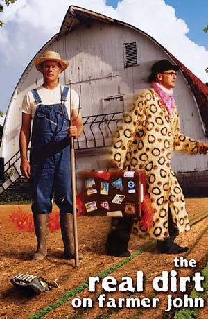
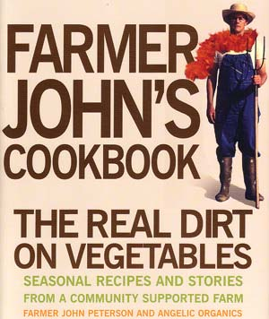

John Peterson grew up on an iconic Midwestern farm in Illinois with big red barns, dairy cows, expansive fields and neighbors working together to harvest crops. His father died when John was a teenager, so he took over running the farm. Over the next decade, he went deeper and deeper into debt and eventually had to sell everything except the farmstead and 22 acres.
It’s an old story - thousands of farmers across the United States have lost their farms. Many transitioned to regular jobs and suburban lifestyles, but John took a different path and started over as an organic farmer. The journey of this eccentric artist-poet-farmer is the subject of the acclaimed documentary film, The Real Dirt on Farmer John.
Much of the movie’s footage came from Farmer John’s childhood. His mother, Anna, filmed happy 4-H meetings and workday picnics; barn building and threshing; her elderly father collecting eggs; her children running through sunlit fields and riding on the tractor with their dad. But this sunny picture of farming gives way to its darker side as the movie progresses, exploring the sad fact of farm failures and healthy soils lost to suburban sprawl. In one poignant interview, an old farmer chokes up as he says, “I just hate to see all that concrete being poured into the land.”
The Real Dirt offers redemption when the film shifts to an exploration of a new way of farming: the small-scale, organic model Mother readers know so well. Eventually, Farmer John dives into community supported agriculture, launching one of the country’s most successful CSAs, Angelic Organics, which produces food for more than 1,000 families in the Chicago area. Recently, those shareholders helped the farm acquire 38 more acres.
Farmer John and the crew at Angelic Organics have also written a quirky cookbook: Farmer John’s Cookbook: The Real Dirt on Vegetables. It provides hundreds of seasonal recipes from CSA members and farmers, and most of them offer new ways of preparing the familiar: Baked Cucumbers in Basil Cream, Sautéed Radishes with Arugula, Sweet Zucchini Crumble. But there is much more than recipes in the cookbook’s 360 pages, including comments from the cooks, letters from CSA members, excerpts from Farmer John’s weekly newsletter, essays by nutrition experts and even a few poems. These tidbits spice up the basic fare and offer readers the flavor of an unusual and admirable farm.
The Real Dirt on Farmer John, which has earned numerous awards, will be available on DVD in 2007.
|
 The Real Dirt on Farmer John will be available on DVD in 2007. To learn more, visit www.angelicorganics.com. |
 Farmer John’s Cookbook: The Real Dirt on Vegetables is available at Mother Earth Shopping. |
|